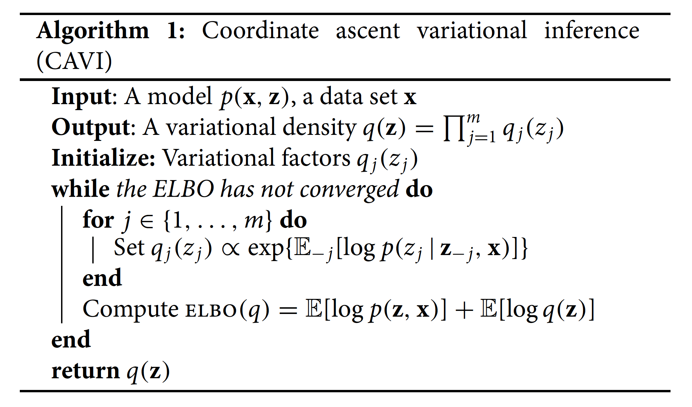
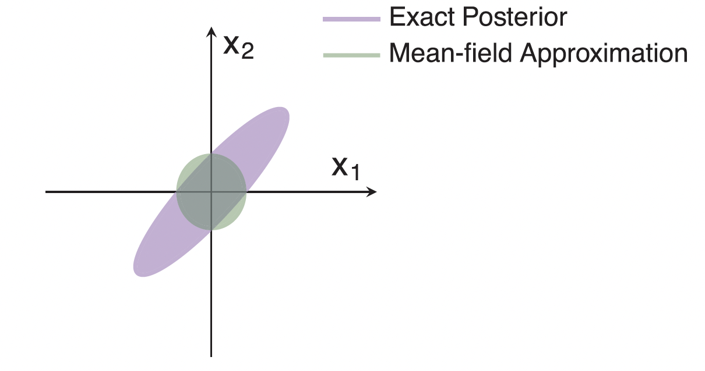

Variational inference
Overview
Today, we cover:
- Variational inference
- Example with linear regression, mixture modeling
Resources:
Announcements:
- Final Project proposal due 4/1 at 10AM
- Homework 4 and 5 will be combined, posted by Friday
For class tomorrow
- Install VPN and try logging into the cluster
- Try getting into my partition
Final project proposal
Due April 1!
Your final project proposal should be one page or less and clearly outline your plans for your final project. This document will help ensure your project is well-defined and feasible.
Your proposal should include the following elements:
- Project Title
- Objective: Clearly state the main goal of your project. What problem are you addressing, or what question are you trying to answer?
- Background & Motivation: Provide brief context on why this project is important or interesting. Why did you choose this topic?
- Approach: Explain how you plan to complete the project, specifically highlighting concepts, techniques, or tools from class that you will use.
Joint posterior distribution
In Bayesian settings our goal is to learn about the joint posterior distribution, i.e.
\[p(\beta, \sigma^2_y|y, X, hyperparameters)\]
This can be hard!
- Often the joint posterior is analytically intractable
- MCMC: sample from it by constructing a Markov chain whose stationary distribution is the posterior
- Can be very slow to converge
- High computational cost
This is the main motivation for MCMC. Also motivation for variational inference
Variational inference motivation
Our goal is still to learn about the joint posterior distribution
\[p(\beta, \sigma^2_y|y, X, hyperparameters)\]
Variational inference turns this from a sampling problem into an optimization problem
Uses a surrogate distribution to approximate the joint density of interest and maximizes the surrogate instead
Scales much better to large datasets
Two-part Gaussian mixture model
- \(Y_1,\ldots,Y_n\) are sampled independently from a mixture of two Normal distributions with density
\[p(y|\theta) = \lambda \mathcal{N}(y|\mu_1,\sigma_1^2) + (1-\lambda)\mathcal{N}(y|\mu_2, \sigma^2_2)\]
- \(\theta = (\mu_1, \mu_2, \sigma_1^2, \sigma_2^2, \lambda)\)
- \(c_1, \ldots, c_n\): labels identifying which observation came from which population
- \(c_i = 1\) if \(Y_i\) from \(\mathcal{N}(y|\mu_1,\sigma_1^2)\); \(c_i = 0\) otherwise
\[c_i \sim Bernoulli(\lambda)\]
lambda is mixing component, probability of being density one or density two
Art of EM is coming up with a useful complete data model
Two-part Gaussian mixture model
Joint density of observed and missing data (i.e. complete data density) is then
\[p(y,c|\theta) = \left[\lambda \mathcal{N}(y|\mu_1,\sigma_1^2)\right]^c\left[(1-\lambda)\mathcal{N}(y|\mu_2, \sigma^2_2)\right]^{1-c}\]
Bayesian Gaussian K-mixture model
Data generating model is
\[\mu \sim N(0, \sigma^2)\] \[c_i \sim Cat(\lambda); \sum_{k=1}^K\lambda_k = 1\]
\[y_i|c_i, \mu \sim N(\mu_{c_i}, 1)\]
Bayesian Gaussian mixture model
Posterior PDF (ignoring hyperparameters) is
\[p(\mu, \textbf{c}|\mathbf{y}) = \frac{\prod_k p(\mu_k)\prod_i p(c_i)p(y_i|c_i, \mu)}{\int_\mu \sum_c\prod_k p(\mu_k)\prod_i p(c_i)p(y_i|c_i, \mu)}\]
- Because of denominator integral cannot be computed easily analytically
see slide 10 of variational slides 3
Bayesian linear regression
\[y = X\beta + \epsilon\]
\[\begin{align*} \epsilon &\sim N(0, \sigma^2_y)\\ \beta &\sim N(0, \sigma^2_b)\\ \sigma_y^2 &\sim IG(A, B) \end{align*}\]
Joint posterior we want to estimate is
\[p(\beta, \sigma^2_y|y, X, h) = \frac{p(\beta)p(\sigma^2)\prod_ip(y|\beta, \sigma^2_y)}{\int_{\beta}\int_{\sigma^2_y}p(\beta)p(\sigma^2)\prod_ip(y|\beta, \sigma^2_y)d\beta d\sigma^2_y}\]
Mention which things are priors and what likelihood is induced
General setup for variational inference
We have a posterior distribution / other probability distribution with an intractiable integral that makes it challen ging to evaluate.
- MCMC: sample from it
- VI: turn it into a tractable optimization problem
General setup for variational inference
Consider a joint density of latent variables \(\textbf{z} = z_{1:m}\) and observations \(\textbf{y} = y_{1:n}\):
\[p(\textbf{z}, \textbf{y}) = p(\textbf{z})p(\textbf{y}|\textbf{z})\]
Latent variables here could mean latent in the E-M algorithm sense, or just parameters we want to estimate.
- Bayesian mixture models:
- Bayesian linear regression:
This notation is mostly borrowed from the Blei tutorial with some modifications.
Main idea behind variational Bayes
Choose a family of approximate densities, \(\mathcal{Q}\) over the latent variables \(z\). Then, find a specific member of that family \(q(z|\nu) \in \mathcal{Q}\) that minimizes the Kullback-Leibler (KL) divergence to the exact posterior, \(p(z|y)\). Here, \(\nu\) is a variational factor we find the optimal value of.
\[KL(q \parallel p) = \int_z q(z)\log\frac{q(z)}{p(z|y)}dz = E_q\left[\log\frac{q(z)}{p(z|y)}\right]\]
- Goal is to minimize \(KL(q \parallel p)\)
- Then, we approximate the posterior with the optimized member of the family \(q^*(\cdot)\)
explain what we mean by family of distributions KL divergence of q from p where q is the distribution being evaluated and p is the target distribution
value is nonnegative
If q is high and p is high, then we are happy (i.e. low KL divergence).
If q is high and p is low then we pay a price (i.e. high KL divergence).
If q is low then we don’t care (i.e. also low KL divergence, regardless of p).
The evidence lower bound
Can’t actually minimize \(KL(q \parallel p)\) directly, but can optimize a function that is equal to it up to a constant.
Called evidence lower bound (ELBO)
In this setting, “evidence” is a term for the marginal likelihood of observed data, \(p(y)\).
Show why you can’t minimize KL directly later
The evidence lower bound
\[\begin{align*} KL(q \parallel p) &= E_q\left[\log\frac{q(z)}{p(z|y)}\right]\\ &= E[\log q(z)] - E[\log p(z, y)] + \log p(y) \end{align*}\]
ELBO is
\[ELBO(q) = E[\log p(z, y)] - E[\log q(z)]\]
- Maximizing \(ELBO(q)\) is equivalent to minimizing \(KL(q \parallel p)\).
More precisely, finding an approximation \(q\) that maximizes the ELBO is equivalent to finding the \(q\) that minimizes the KL divergence to the posterior!
The evidence lower bound
Why is it called the evidence lower bound? Serves as a lower bound for \(p(y)\) by Jensen’s Inequality:
ELBO is less than or equal to the evidence - optimize this over densities q(z) to find optimal approximation
The evidence lower bound
Why is it called the evidence lower bound? Serves as a lower bound for \(p(y)\) by Jensen’s Inequality:
\[\begin{align*} \log p(y) &= \log \int_z p(y, z)dz\\ &= \log \int_z p(y,z)\frac{q(z)}{q(z)}\\ &= \log \left( E_q\left[\frac{p(y,z)}{q(z)}\right]\right)\\ &\ge E[\log p(y,z)] - E[\log q(z)] \end{align*}\]
ELBO is less than or equal to the evidence - optimize this over densities q(z) to find optimal approximation
The evidence lower bound
- Optimize this over densities \(q(z)\) to find optimal approximation
- In variational inference, we find settings of the variational density that maximize the ELBO, which is equivalent to minimizing the KL divergence.
- We choose a family of variational distributions such that these two expectations can be computed
- How to choose the family of densities?
Mean field variational inference
Mean field makes the strong simplifying assumption that the latent variables are independent in the approximation:
\[q(\textbf{z}) = \prod_{j = 1}^mq_j(z_j)\]
- The variational family is not a model of the observed data! Instead, it is the ELBO and the corresponding KL minimization problem which connects the fitted variational density to the data.
Assumes latent variables are mutually independent - easier to optimize over a simple family - data doesn’t appear in this equation
Mean field variational inference
In principle, \(q_j\) can take on any parametric form appropriate to the corresponding variable \(z_j\).
- For example, continuous variable might have a Gaussian factor
- Categorical variable might have a categorical factor
- Allows for optimization of each \(z_j\) independently
Coordinate Ascent Variational Inference (CAVI)
- Iterative algorithm for solving this optimization problem
- CAVI iteratively optimizes each factor of the mean-field variational density while holding the others fixed
- Climbs ELBO to a local optimum
- Complete conditional of jth latent variable \(z_j\) is \(p(z_j|\mathbf{z}_{-j}, \mathbf{y})\).
Optimal \(q_j(z_j)\) is
\[q_j^*(z_j) = \exp\left\{E_{-j }\left[\log p(z_j|\textbf{z}_{-j}, \mathbf{y}) \right]\right\}\] where expectation is taken W.R.T. \(q_{-j}(\textbf{z}_{-j}) = \prod_{l \ne j}q_l(z_l)\).
What is the optimization problem we are trying to solve? - Maximize ELBO, which finds q closest to our posterior of interest - ELBO isn’t guaranteed to be convex
Coordinate Ascent Variational Inference (CAVI)
Algorithm 1 from Blei tutorial
Derivation of CAVI updates
Goal is to find \(q(z)\) that maximizes ELBO. First, some useful results.
- by probability chain rule:
\[p(\textbf{y}, z) = p(\textbf{y}) \prod_{j = 1}^m p(z_j | \textbf{z}_{-j}, \textbf{y})\]
- using mean field approximation \(q(\textbf{z}) = \prod_{j = 1}^mq_j(z_j)\):
\[E_q[\log q(\textbf{z})] = \sum_{j = 1}^m E_{q_j}[\log q_j(z_j)]\]
Bayesian linear regression
\[y = X\beta + \epsilon\]
\[\begin{align*} \epsilon &\sim N(0, \sigma^2_y)\\ \beta &\sim N(0, \sigma^2_b)\\ \sigma_y^2 &\sim IG(A, B) \end{align*}\]
- Posterior is \(p(\beta, \sigma^2_y | y, x)\)
- Approximate with \(q\)
Bayesian linear regression
From mean field assumption,
\[q(\beta, \sigma^2_y) = q(\beta)q(\sigma^2_y)\]
\[ELBO(q) = E_q[\log p (y, \beta, \sigma^2_y)] - E_q[\log q(\beta)] - E_q[\log q(\sigma^2_y)]\]
\[\begin{align*} \log q^*(\beta) &\propto E_{q(\sigma^2_y)}[\log p(y, \beta, \sigma^2_y)]\\ \log q^*(\sigma^2) &\propto E_{q(\beta)}[\log p(y, \beta, \sigma^2_y)] \end{align*}\]
Solve these expectations to get updates for \(\beta\), \(\sigma^2\)
Bayesian linear regression
Update for \(q^*(\beta) = N(m, S)\)
Since \(\sigma^2_y\) is unknown, we plug in its expected precision under \(q(\sigma^2_y)\):
\[E_{q(\sigma^2_y)}\!\left[\frac{1}{\sigma^2_y}\right] = \frac{A_{post}}{B_{post}}\]
\[S = \left(\frac{A_{post}}{B_{post}} X^TX + \frac{1}{\sigma^2_b}I\right)^{-1}\]
\[m = S\,\frac{A_{post}}{B_{post}} X^Ty\]
This is the key coupling in CAVI: each update uses the current expected value of the other parameter’s variational distribution, not a point estimate.
Bayesian linear regression
Update for \(q^*(\sigma^2_y) = IG(A_{post}, B_{post})\)
\[A_{post} = A_0 + \frac{n}{2}\]
\[B_{post} = B_0 + \frac{1}{2}E_{q(\beta)}\!\left[\|y - X\beta\|^2\right]\]
The expectation expands as:
\[E_{q(\beta)}\!\left[\|y - X\beta\|^2\right] = \|y - Xm\|^2 + \text{tr}(X^TX S)\]
so \(B_{post} = B_0 + \dfrac{1}{2}\left(\|y - Xm\|^2 + \text{tr}(X^TX S)\right)\)
tr(X^T X S) is the contribution from posterior uncertainty in beta — this is what distinguishes the Bayesian update from a plug-in estimate.
BLR CAVI Algorithm
- Initialize: set \(A_{post} = A_0\), \(B_{post} = B_0\) (use prior as starting point)
- Repeat until ELBO converges:
- Update \(q(\beta)\): compute \(S\) and \(m\) using \(E[1/\sigma^2_y] = A_{post}/B_{post}\)
- Update \(q(\sigma^2_y)\): compute \(A_{post}\) and \(B_{post}\) using current \(m\) and \(S\)
- Compute ELBO and check for convergence
- Return \(m\), \(S\), \(A_{post}\), \(B_{post}\)
Initializing with the prior means E[1/sigma^2_y] = A_0/B_0, the prior expected precision. This is more principled than initializing sigma^2_y = 1 or similar.
BLR CAVI in R: setup
cavi_blr <- function(y, X, sigma2_b = 10, A0 = 1, B0 = 1,
max_iter = 200, tol = 1e-6) {
n <- nrow(X); p <- ncol(X)
XtX <- crossprod(X) # X^T X
Xty <- crossprod(X, y) # X^T y
# initialize using the prior expected precision
A_post <- A0
B_post <- B0
elbo_vec <- numeric(max_iter)
# ... (update loop on next slide)
}crossprod(X) is faster than t(X) %*% X. We precompute XtX and Xty outside the loop since they don’t change.
BLR CAVI in R: update loop
for (iter in seq_len(max_iter)) {
E_prec <- A_post / B_post # E[1/sigma^2_y]
# update q(beta)
S <- solve(E_prec * XtX + (1 / sigma2_b) * diag(p))
m <- S %*% (E_prec * Xty)
# update q(sigma^2_y)
resid2 <- sum((y - X %*% m)^2)
penalty <- sum(diag(XtX %*% S)) # tr(X^T X S)
A_post <- A0 + n / 2
B_post <- B0 + 0.5 * (resid2 + penalty)
elbo_vec[iter] <- compute_elbo_blr(y, X, m, S,
A_post, B_post, sigma2_b)
if (iter > 1 && abs(elbo_vec[iter] - elbo_vec[iter-1]) < tol) break
}
list(m = m, S = S, A_post = A_post, B_post = B_post,
elbo = elbo_vec[seq_len(iter)])Note that A_post doesn’t change between iterations — only B_post does. The penalty term tr(X^T X S) accounts for uncertainty in beta when updating sigma^2. Without it, we’d be underestimating B_post.
Bayesian Gaussian mixture model
For homework.
slides 2 page 50 has good slides on this
Variational inference with exponential families
In the example above we used exponential families for priors- this allows for easier derivation of CAVI updates that have a closed form.
There are a wide range of models that can use this approach:
- Matrix factorization, regression, stochastic block models of networks, and more
- For this class of models, generic updates for the exponential family distributions have been derived (see 4.1, Blei)
Drawbacks

exact posterior has positive correlation between x1 and x2. In other words, the posterior covariance matrix has non-zero off-diagonal entries. - mean field cannot capture correlation between variables - also underestimates marginal variances - means look good though
Drawbacks
Exact posterior has positive correlation between x1 and x2. In other words, the posterior covariance matrix has non-zero off-diagonal entries.
- Mean field cannot capture correlation between variables
- Also underestimates marginal variances
- Means look good though
This is fine if all you want is point estimates! But if you care about uncertainty quantification, it’s not that great.
Variational inference outside of mean field assumption
In principal, you can choose any \(q\) explicitly rather than have it fall out of the math:
- Pick a parametric family and optimize it’s parameters (maximize the ELBO with respect to it’s parameters using gradient ascent)
- Variational autoencoders
- Structured variational inference
These are beyond the scope of what i’m going to cover
Connection to the EM Algorithm
Let’s say we have latent variables \(z\), parameters \(\theta\), and data \(y\). Fundamental problem is that the marginal likelihood of the data, \(p(y|\theta) = \int_zp(y,z|\theta)dz\), is intractable.
- EM goal: maximize \(p(y|\theta)\), the marginal likelihood
- VI goal: compute posterior \(p(z, \theta|y)\)
EM can be viewed as a special case of VI - EM treats parameters theta as fixed
INLA
Performs approximate Bayesian inference in latent Gaussian models
- Also underestimate posterior variance
- Used often in spatial statistics
Have emily guest lecture on this next year
Lab
Implement Bayesian regression